Case 3 - La Trattoria
Resume:
Vores case 3 arbejde startede med to dage, hvor vi havde feltarbejde. Her lavede vi både observationer og interviews med brugere af vores klient ”La Trattoria”. Vi benyttede os af kvalitative data’er, hvor vi havde direkte kontakt med vores brugere. Vi benyttede os også af kvantitative dataer, da vores data kom igennem nettet via. Markedsundersøgelser. Dernæst begyndte vi, at lave vores personas. Her valgte vi en persona der hed ”studerende” og en persona der hed ”kæresteparret”. Vi var igennem SWOT – analysen, hvor vi kiggede på La Trattorias styrke, muligheder, trusler og svagheder. Det var her klart, at La Trattoria, burde benytte sig mere af, at markedsfører sig selv ude på de sociale medier, da det er her deres personas er.
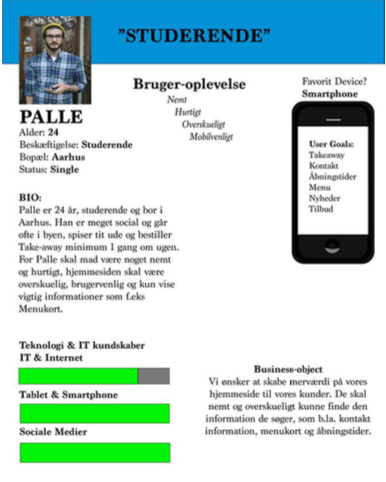
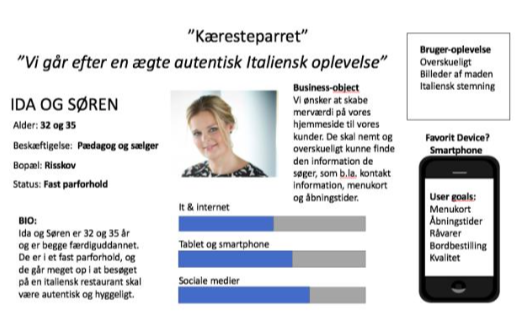
I kommunikation fik vi b.la. også benyttede os af kortsortering og informationsarkitektur. Her startede vi med at Brainstorme, hvilket indhold vi synes var mest væsentligt. Herefter gik vi videre med kortsortering, hvor vi benyttede os både af en åben og lukket kortsortering. Her fik vi testet omkring 10 personer omkring hvilket indholdselementer, de fandt mest væsentlige, hvis de skulle benytte sig af siden. Efter dette gik vi i gang med at lave et IA diagram. Dette lavede vi på baggrund af vores research fra kortsortering. Som der kan ses benyttede vi os af koncept modulet, til at beskrive det overordnet design, og hvorledes siderne blev bygget op. Vi benyttede af den hierarkisk opbygning, hvor man starter på en forside og herefter kan vælge undersider.
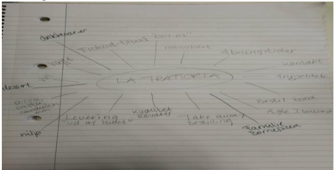
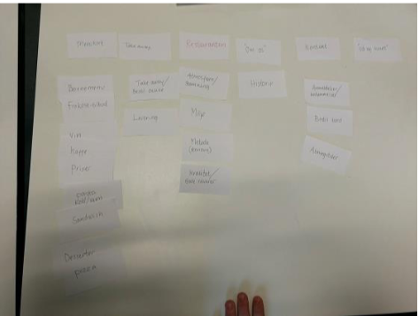
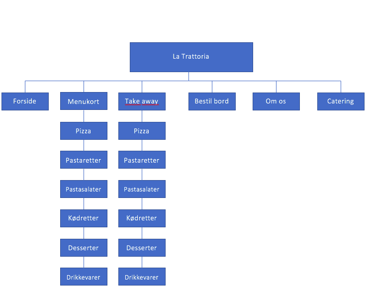
I design startede vi med, at lave et temabaseret moodboard, der kunne fremhæve stemningen og farverne. Ud fra vores moodboard trak vi to farver ud – en grøn og en rød fra det italienske flag. Vi var fast besluttet på, at vi i gruppen ville lave et nyt logo til vores klient. Nedenfor ses vores klients gamle logo. Vi syntes ikke, at det skimtede igennem, at det var en italiensk restaurant, så vi gik i gang med skitsering af et nyt logo. Processen var selvfølgelig lang, men vi fandt frem til et nyt forslag. Efter at have skitseret det i hånden gik vi i gang med at tegne det i illustrator. Vores logo blev til et emblem logo, hvor der er tekst inde i en figur.
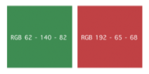
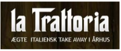
Vi gik herefter i gang med at designe vores mock-ups. Vi brugte den samme forside til desktop og tablets og lavede en separat til mobilstørrelse. Her tænkte vi over, hvordan kompositionen var sat op, således det blev mest overskueligt for øjet. Nedenfor ses vores mock-ups:
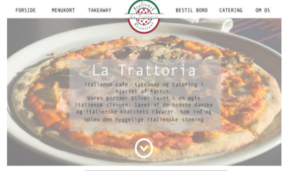
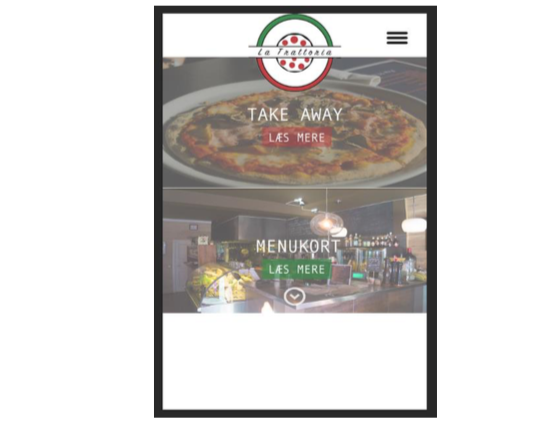
Dernæst begyndte vi at kode. Vi har opbygget vores webside semantisk op med HTML og CSS. Vi prøvede så vidt muligt, at kode vores site efter vores mockups. Sille og jeg startede ud med at kode navigationsbaren til vores site. Herefter byggede vi stille og roligt videre med, at få sat et logo på og begynde at finde billeder til forsiden, samt at lave bokse og skrift, som skulle stå ovenpå. Dette blev gjort i mobil device først, og derefter byggede vi videre til tablet og desktop. Imens var drengene i fuldgang med at lave burgermenu og designe menukort. Herefter kørte det egentligt bare derud af, som så vidt muligt. Hjemmesiden kan ses her.
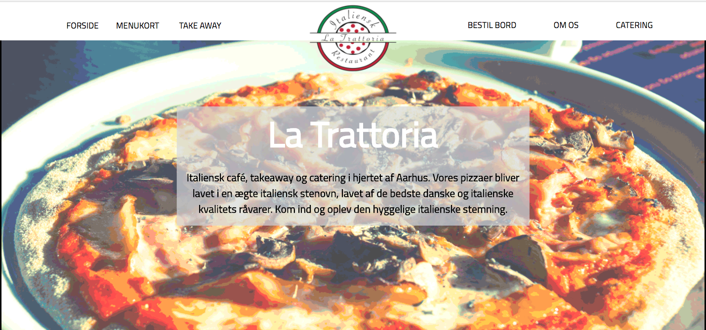
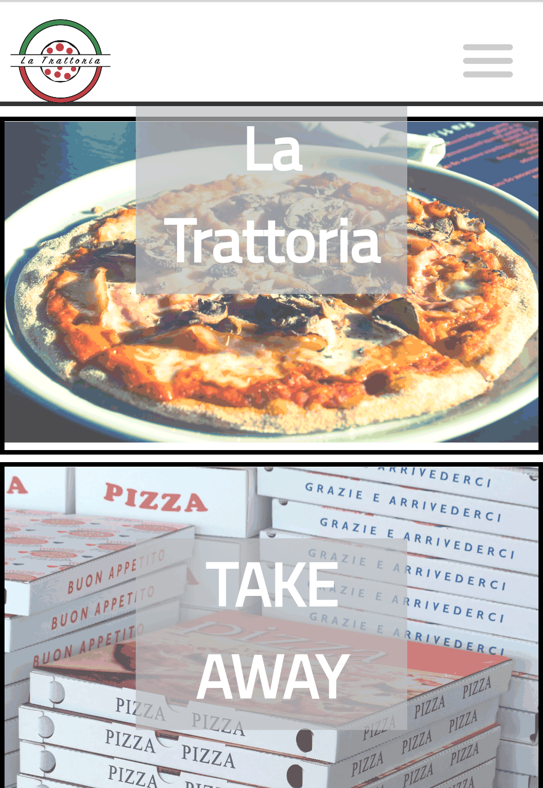
Personlig og fagligudvikling:
Ser man på vores gruppe per individ vil jeg mene, at vi alle er gode, og har forskellige egenskaber vi er gode til. I princippet vil vi være en ideel gruppe, men der var bomb på vejen, der gjorde at vi var et par stykker i gruppen, der til sidst blev drænet af energi. Dette skyldtes at man f.eks. ikke kan finde ud af at møde til tiden, at skulle gå på kompromis - egentligt bare gerne vil være uenig selvom der er lavet mock-ups, ikke ønsker at deltage i selve rapportskrivning og heller ikke læse den samt det ønskede Sille og jeg, at rette de sidste små detaljer (såsom at et gruppemedlem har glemt at tage mobil logoet ind i mobilstørrelse, og ikke vidste at der var blevet lavet et), hvor der i stedet for at blive støttet op omkring dette blev grinet af os, og sagt at denne case bare skal overstås.
Ser man på min personlig udvikling i denne proces må det siges, at jeg har lært en del. Jeg tror at jeg faktisk har lært ligeså meget personligt, som fagligt. Dette skyldes, at denne case proces var enorm intens pga. overstående. Jeg vil nok beskrive mig selv, som en meget perfektionist person. Dette medvirker til, at jeg i som en gruppe som denne går og bliver små bitter, da jeg ønsker at aflevere noget jeg har givet 100% på. Nødvendigvis behøves det ikke være 100% korrekt, men at jeg har gjort mit for at levere det bedste produkt fylder enormt meget for mig. Derfor bliver jeg som person irriteret over, at halvdelen af gruppen ikke ønsker at udlevere et produkt de har givet 100% deres tid og kræfter i.